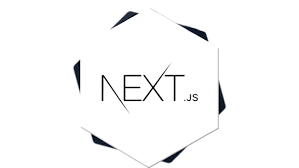

INTRODUCTION
NextJS is beased on react framework for developing full stack web using SSR..It offers code splitting and better SEO..Dynamically manages Javascript modules and create react componenets..Typescript support
STRUCTURE
NextJS functionality is divided into two main parts for User Interface: 1.Top level folders | 2. Routing files
1.Top level folders:Organizes project's code & App's static assets..src is main source file
2.Routing: Defines routes and manages meta data..
**5 million weekly downloads, persistent community!! **
SETUP
Following setup is used :
- Write npx-create-next-app your-app-name **Node.js Should be installed..
- cd your-app-name
- npm run dev
-